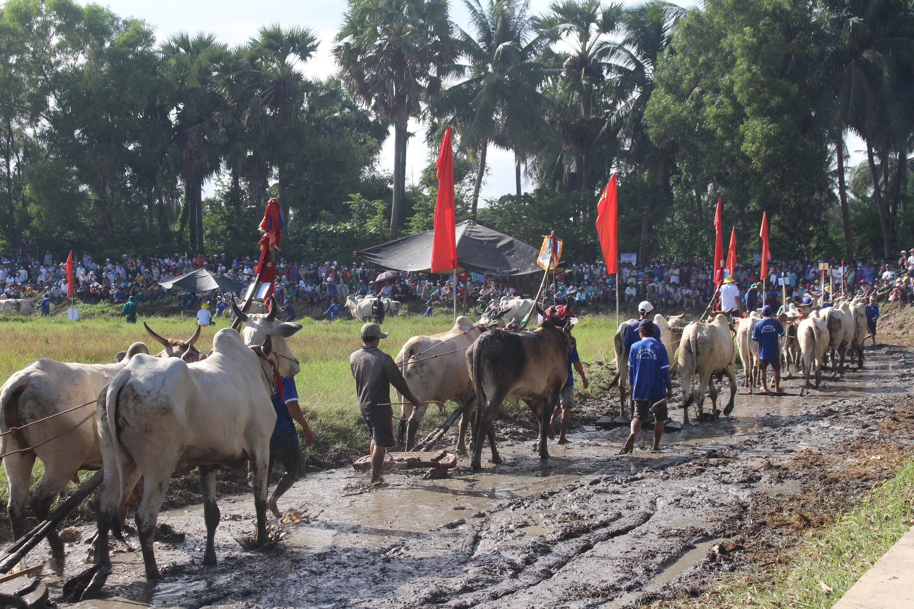

An Giang has a rich and diverse ecosystem, with many famous landscapes and architectural monuments. The province currently has 88 ranked historical and cultural relics, of which 2 are special national monuments, 28 national monuments and 58 provincial relics. In addition, the province also possesses a unique and diverse intangible cultural heritage treasure of the Kinh, Khmer, Cham and Hoa ethnic communities.
More than 100 large and small festivals every year, along with many handicraft villages, performing arts, cuisine, costumes, folk knowledge, religion, beliefs, community practices... prove the process of exist, exploration and conquering new lands when our ancestors faced full of difficulties, but all combined into a unique and distinctive culture of the cultural heritage system in the province. This is a valuable resource, an important resource for tourism development, contributing to economic development and social progress.
Ba Chua Xu Temple Festival in Chau Doc
Ba Chua Xu Temple Festival in the evening
The Via Ba Chua Xu festival on Sam mountain is a unique traditional folk festival of An Giang in general and the Chau Doc city in particular contains profound human values, expressing the people's aspirations towards good things in life. In 2014, the Festival was recognized by the Ministry of Culture, Sports and Tourism of Vietnam and included in the list of national intangible cultural heritage.
Ba Chua Xu Temple
According to legend, long ago, when Sam Mountain was still desolate, villagers went up the mountain to discover an ancient statue sitting on a sandstone pedestal. At that time, Siamese troops often harassed our country. One time, they went to the top of Sam Mountain and met this ancient statue. Although he tried many times to carry the statue down the mountain, no matter how hard he tried, he could not move it.
The villagers saw this and wanted to "invite" the statue down the mountain to preserve and worship it. Many strong men were mobilized, but they could not lift the statue. When the village elders prayed, they were told, "Choose 9 virgin girls to take her down the mountain." Strangely enough, 9 girls carried her statue gently. At the foot of the mountain, the statue suddenly became heavy and could not be lifted up. The villagers understood that she wanted to live here, so they built a shrine.

Statue of Ba Chua Xu of Sam Mountain
Her statue is about 1.65m high. According to French archaeologist Malleret, her statue is a type of statue of the god Visnu, carved with a noble and regal sitting figure. The statue is made of red stone, has high artistic value, and was probably carved at the end of the 6th century AD. However, up to now, the statue of Ba Chua Xu in Sam Mountain is still a mystery.
The Ba Chua Xu Festival of Sam Mountain takes place from the 22nd to 27th of the 4th lunar month, attracting a large number of tourists to make pilgrimages, offer offerings and admire the natural scenery of An Giang land, and is recognized as a festival. national level in 2001. The festival was restored with traditional rituals, undertaken by the Temple Management Board.
Below are some pictures of the festival:

Currently, the Ba Chua Xu Festival of Sam Mountain is being allowed by the Prime Minister to prepare a dossier to submit to UNESCO for recognition as an Intangible Cultural Heritage of Humanity. It can be seen that the Ba Chua Xu Festival of Sam Mountain contains enormous historical and cultural value, playing an important role in the spiritual life of the An Giang community in particular and Vietnam in general.
Chol Chnam Thmay Festival
Chol Chnam Thmay festival is the most important annual festival of the Khmer people, meaning the festival in the new year, similar to the Vietnamese Lunar New Year. In Khmer, "Chol" means "enter", "Chnam Thmay" means "new year". Chol Chnam Thmay Festival is a festival with many diverse religious, cultural, artistic, sports... activities. Therefore, the Southwest provinces in general and An Giang in particular often attract tourists to visit on this occasion.
Chol Chnam Thmay festival is the most important annual festival of the Khmer people
Located on the southwest border, An Giang is a province rich in tourism development potential. Because, this place not only has charming rivers and majestic mountains, but also converges four ethnic groups: Vietnamese (Kinh), Khmer, Cham, and Chinese with diverse and unique cultural appearances. Among them, the Khmer community is a minority ethnic group that has long lived in An Giang, concentrated in large numbers in Tinh Bien town and Tri Ton town.
Many unique cultural activities at Chol Chnam Thmay Festival
The Khmer people possess a unique traditional cultural treasure, deeply imbued with Buddhism, clearly shown through festivals such as Chol Chnam Thmay, Sen Don-ta, Ooc Om-boc, Kathina... The Khmer follow Southern Buddhism. Traditionally, almost all cultural activities are associated with the temple. It is not only a place containing religious values, but also a place for community activities, education and cultural preservation.
In particular, the An Giang Khmer community has three national intangible cultural heritages: Bay Nui bull racing festival, knowledge and technique of writing on Buong leaves, and Du Ke Khmer theater art. Besides, they also have many types of very attractive folk performing arts. Such as performing five-syllable music, sa-dam drum dance, ro-ham dance, lam-vong dance, aday repartee singing, slow-rinh cha-pay...

The custom of "Building sand mountains" is one of the indispensable rituals
in the Chol Chnam Thmay New Year of the Khmer people.
Chol Chnam Thmay festival is held according to the traditional Khmer calendar, lasting for three days, usually falling around mid-April of the solar calendar. In 2024, the Chol Chnam Thmay Festival takes place from April 13 to 16. On the first day, people bring offerings to the temple to carry out the Maha Sangkran procession. On the second day, in the morning, Buddhists go to the temple to make offerings to the monks, and in the afternoon, perform the ritual of building sand mountains to pray for good luck.
The custom of "Building sand mountains" is one of the indispensable rituals in the Chol Chnam Thmay Tet of the Khmer people. Clean sand is poured into piles around the Buddha temple and around the main courtyard. Build small sand mountains in eight directions, the ninth mountain in the middle is the center of the earth. This ceremony is called Anisang Pun Phnom Khsach. "Blessed with sand" is a custom to accumulate blessings and virtue on the occasion of Chol Chnam Thmay Tet of the Southern Khmer people.
Buddha bathing ritual at the Chol Chnam Thmay Festival
On the third day, the pagoda performs the ritual of bathing the Buddha statue, also known as the water ceremony. This is an important and sacred ritual for Khmer people. The ritual of bathing a Buddha statue has a lot to do with the Khmer people's way of dealing with water, with the meaning of washing away all the troubles of the old year so that the new year will be purer and happier.
Experience the water splashing ceremony at the Chol Chnam Thmay Festival
All the rituals performed during the 3 days of Chol Chnam Thmay Tet of the Southern Khmer people are lessons about the way of life and lifestyle for the Khmer people according to Buddhist philosophy. Not only do they perform rituals at the temple, Khmer people also invite monks to their homes to chant prayers to bless their families.
Coming to the Chol Chnam Thmay Festival, visitors will experience Khmer culture and enjoy specialties such as jaggery, flat green rice, katum cake, burned chicken, grilled beef, beef porridge, stabbed papaya...
Bay Nui Cow Racing Festival
Bay Nui Cow Racing Festival is held during the Sene Dolta festival (grandparents worship ceremony) of the Southern Khmer people, bearing the mark of traditional folk culture of residents working in wet rice agriculture. Not only does it demonstrate the traditional cultural beauty and humanity of the Khmer ethnic people in the Bay Nui region, the festival is also a meaningful sports and entertainment playground for Khmer farmers in Phum and Soc areas after hours working hard in the fields.
Bay Nui Cow Racing Festival
Khmer people in the Bay Nui region use cows mainly in agricultural production, so they attach great importance to raising and taming cows. Plowing with oxen on fields filled with flooded sand was the main idea for creating this sport.
Bay Nui bull racing festival takes place during the time
when Khmer people begin to prepare for the new rice crop
Bull races often take place in fields near the pagoda, organized by monks and awarding prizes to pairs of cows if they win. Pairs of racing cows are usually purebred cows, tall, agile, with firm muscle and tendons, well-proportioned sharp horns, and good cow psychology to avoid being affected by fear and panic by noise when participating in the racing.
Pairs of cows walk around the racetrack before entering the competition
The organizing committee records and reads the announcement of the draw results
To conduct bull racing, people draw lots to choose pairs in the order of pairs in front and pairs in back. The harrow's teeth are cut short, which is where the driver stands holding the rope to restrain the reins and holds a hard whip with a sharp tip to push beef butt. The operator usually stands with one foot on the harrow rig, and the other foot stands on the wooden bar connecting the cow's neck yoke to the harrow rig. A good person is someone who knows how to stand to distribute force to the cow while standing firmly to control the cow skillfully.
The pairs of cows showed courage, extreme bravery and beauty in the race.
Bull racing is divided into 2 rounds, the first round is called Ho, the pairs of cows run slowly mainly to warm up the cows and gain momentum. In this round, the pair of cows running behind steps on the harrows of the previous pair of cows and is considered a loser. The next round is called the Drop round and is a sprint round in the last 100m. If the rear pair of cows step on the harrows of the previous pair of cows or pass them, they win. Technical errors such as breaking the harrow, violating the track or the bull driver falling out of the harrow in the Drop round are all considered losses. The winning pair of bulls will compete in the next round, competing in pairs until there is a final winning pair in the final round.
Tens of thousands of people crowded to watch the pairs of cows compete
and did not forget to scream when a pair of cows surpassed each other.
Pairs of oxen were like F1 cars pushing their way to the finish line amid the cheers of the audience
Dolta festival and Bay Nui bull racing festival are important holidays that have great spiritual significance for the people of An Giang and at the same time bear the traditional imprint of wet rice agriculture. In particular, the bull racing festival is an exciting folk cultural activity and is loved by people. This is also a unique feature of regional culture that widely attracts domestic and foreign tourists. Come to Bay Nui, An Giang on the occasion of Dolta festival (around the 9th lunar month every year) to be able to attend this vibrant and attractive festival.
Enjoying the video of this festival: